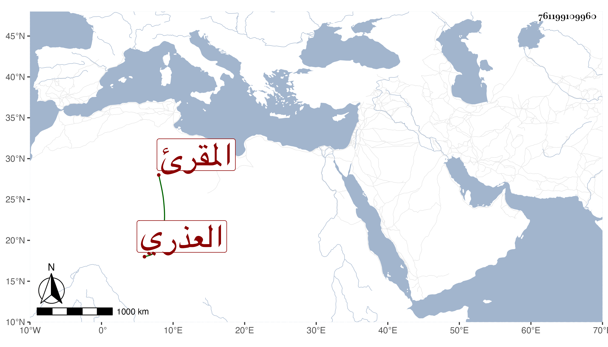

0902Sakhawi.DawLamic.ITO20230111-ara1.EIS1600.761199109960
Biography ID: 761199109960
870
علي بن عثمان بن محمد بن أحمد نور الدين أبو البقاء العذري المقرئ ويعرف بابن القاصح بقاف ثم مهملتين وسمى بعضهم جد أبيه حسنا لا أحمد . ولد في ثالث رجب سنة ست عشرة وسبعمائة وعرض الشاطبية على المجد إسماعيل الكفتي بعرضه لها على التقي ابن الصائغ وأجاز له الميدومي وابن أبي الحوافر والرحبي والمقدسي وتقدم في القراءات وكان ممن أخذها عنه الزراتيتي وأكثر عنه من شيوخنا البرهان الصالحي فسمع منه من تصانيفه مصطلح الإشارات في القراءات الست الزائدة عن السبع المروية عن النقات والقصيدة العلوية في القراءات السبع المروية وتذكرة الأصحاب في تقدير الإعراب ومن غيرها المستنير لأبن سوار والإرشاد للقلانسي والكافي لابن شريح ، قال شيخنا الزين رضوان : سمعت عليه بعض القرآن بالروايات ولم يقدر لي القراءة عليه لكن قرأت بعض المصطلح له على ابن الزراتيتي عنه . قلت : ومن تصانيفه أيضا شرح الشاطبية والرائية وشرح قصيدته العلوية والإمالة وغير ذلك . وقد ذكره ابن الجزري في طبقات القراء له باختصار فقال : ناقل متصدر قرأ العشر وغيرها على أبي بكر بن الجندي وإسماعيل الكفتي وألف وجمع قرأ عليه وبيض ، وذكره شيخنا في إنبائه باختصار فقال علي بن محمد بن القاصح نور الدين المقرئ قرأ على المجد الكفتي ونظم قصيدة في القراءات وكان يقرئ بجامع المارداني . مات في ذي الحجة سنة إحدى انتهى . والصواب في نسبه ما قدمته رحمه الله وإيانا .
